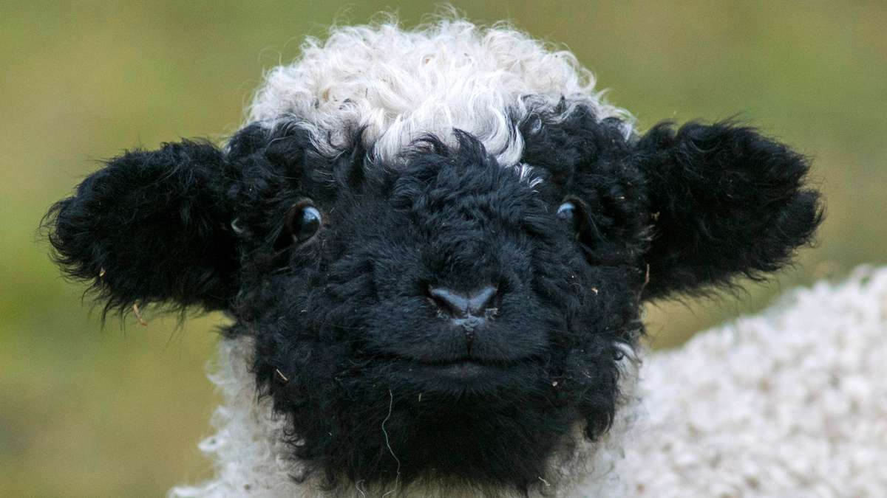

SCHWARZNASENSCHAFE
Alles über die flauschigen Walliser!
Hörner, Locken und eine schwarze Nase: Schwarznasenschafe sind echte Charakterköpfe der Schweizer Alpen! Entdecke ihre erstaunlichen Fähigkeiten, lustigen Besonderheiten und ihr Leben hoch oben in den Bergen.
Wissenschaftlicher Name:
Ovis aries

Lebensraum:
Schwarznasenschafe leben in den Bergen und Alpen. Im Sommer sind sie oft auf Alpwiesen und hochgelegenen Weiden. (Sie können sich gut in steilen Hängen vortbewegen.) Im Winter sind sie meistens im Stall oder in Weiden weiter unten im Tal. Ursprünglich kommen sie aus dem Wallis (CH)
Grösse:
Das Männchen (Widder) hat eine Schulterhöhe von ca.75-83cm. Das Weibchen (Auen) hat eine Schulterhöhe von ca.65-75cm.
Gewicht:
Auch hier ist das Männchen schwerer als das Weibchen. Mänchen= ca. 80–125 kg. Weibchen= ca. 60–90 kg.
Alter:
Schwarznasenschafe können etwa 10-12 Jahre werden.
Aussehen:
Sie haben ein dichtes langes und meistens weisses Fell. Und wie ihr Name schon sagt, haben sie eine schwarze Nase, schwarze Ohren, schwarze Knie und schwarze Oberschenkel.
Nahrung:
Schwarznasenschafe fressen hauptsächlich Heu, Gras und Kräuter.
Nachwuchs:
Die Babys heissen Lämmer. Pro Geburt kommen etwa 1-2Lämmer auf die Welt.
Familie:
Sie gehören zur Familie der Hornträger.
Berggänger:
Schwarznasenschafe können in den Bergen auf einer Höhe von ca. 2000m leben. Ihr dickes Fell wärmt sie dabei.
Hörner:
Sowohl die Männchen als auch die Weibchen haben spiralenförmige Hörner.

Modevorschriften:
Bei der Zucht dieser Rasse wird stark auf die Farbverteilung geachtet. Ein perfektes Schwarznasenschaf muss exakt schwarze Ohren, schwarze Augenringe, schwarze „Stiefel“ an den Beinen und schwarze Punkte auf den Knien haben. Weibliche Schafe tragen zusätzlich einen schwarzen Fleck am Schwanz – bei den Widdern ist dieser dagegen absolut unerwünscht
Schweizer Promis:
Schwarznasenschafe sind eine Traditionelle Schaf-Rasse und sie gelten als eines der bekanntestes Symboltieren des Wallis!
WISSENSWELT DER SCHWARZNASENSCHAFE
Ein Klick. Eine Welt voller Wissen.
Von saftigen Alpenwiesen bis zu flauschiger Schafwolle: Entdecke spannende Geheimnisse rund um die Walliser Schwarznasenschafe.
❧Willkommen im Schaf-Lexikon!
Wähle einen Begriff aus oder suche selbst danach.
Diese Begriffe kann ich:
Klicke auf einen Begriff, um mehr zu erfahren!
Bilder zu den Schafen:


